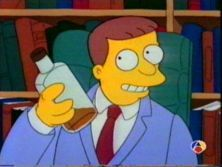

Lionel Hutz
 De: La Frikipedia, la enciclopedia extremadamente seria.
De: La Frikipedia, la enciclopedia extremadamente seria.
De la serie grandes personajes:
Lionel Hutz a punto de ganar un caso, pero esto no ocurre
| Nacimiento
|
1980
|
| Muerte
|
ayer
|
| Ocupación
|
abogado
|
| Nacionalidad
|
Springfield
|
| Malo o bueno
|
malo (abogando)
|
| Atentados contra la humanidad
|
ser malo
|
| Religión
|
ya no tiene fe
|
| Notas
|
Por que a mí!
|
«Guau!, un caso de asesinato, me hare rico y famoso aunque pierda!»
~ Lionel Hutz Cuando el Sr Burns atropello a Bart
«Señor Simpson, No he visto un caso tan claro de publicidad fraudulenta desde la pelicula 'La Historia Interminable' »
~ Lionel Hutz Cuando Homer demando al restaurante del holandés, que decia "Todo lo que pueda comer".
«Su caso ganado en treinta minutos, o la pizza es gratis.»
~ Lionel Hutz Ofreciendo la oferta de su buffet de abogados.
Lionel Hutz, alias Leobardo Luna, alias Miguel Sánchez, Alias Dr. Nguyen Van Falk, es el abogado mas efectivo de springfield, (después de el de pelo azul y de la docena del señor Burns), es el que contrata la familia simpson, porque es el mas barato, pero siempre pierde los casos, aparte de abogado es zapatero, niñera, alcoholico, y mantiene una relación sexual amorosa muy fuerte con su novio David.
Casos
Hutz tomandose una de sus tipicas fotos
- Ganó un caso en el que Homer demanda al restaurant "El Holandés cocinante" por no cumplir con su politica de: "todo lo que pueda comer", y por no haberle prestado el baño a Homer, para que cagara, despues de haber comido, 250kg de camarones.
- Ganó el juicio a Roger Meyers Jr. por plagio de Tommy y Dally, pero lo ayudo Bart sobornando al juez.
- Participó en el juicio por el alma de Homer, cuando se la vendió al diablo Ned Flanders a cambio de "la rosca prohibida". Huyó cobardemente por la ventana cuando estaba a punto de perder, pero ganaron el juicio gracias a Marge
- Cuando Marge lo contrato para su caso de acoso sexual, al ver el gran buffet de abogados contratados por el Sr. Burns, huyó despavorido, y luego tuvo un coma etilico, por eso no volvio a salir mas.
- Hizo de niñera de Bart, Lisa y Maggie, con un excelente pago de 2 paletas del refrigerador, y una jaula oxidada.
Diálogos
- Lionel Hutz: Bueno, no ganamos. Aquí está su pizza.
- Marge: Pero si ganamos.
- Lionel Hutz: (abre la caja vacía) Que bueno. No había pizza.
- Lionel Hutz: Ahora no se preocupe Señora Simpson, Yo... uh-oh. Nos tocó el Juez Sneider.
- Marge: ¿Eso es malo?
- Lionel Hutz: Bueno, no le caigo demasiado... bieeen desde que casi atropellé a su perro.
- Marge: ¿Solo por eso?
- Lionel Hutz: En realidad, reemplace "casi" por "repetidas veces" y "perro" por "hijo".
- Lionel Hutz: No se preocupe, yo he tratado con casi todos los jueces de este condado, y muchas veces como abogado.
 ¿Me acompañan con un trago?
¿Se imaginan un mundo sin abogados?
- Lionel Hutz: Señora Simpson, tiene usted suerte. Su juicio sobre acoso sexual es justo lo que necesito para reconstruir mi carrera. Me acompaña con un trago?
- Marge: Sr. Hutz!! Son las 9:30 de la mañana!
- Lionel Hutz: Si, pero no he dormido en días.
-"Objeción" -"Ha lugar" -"Aaaaargh!
- Lionel Hutz: Ahora Sr. Lampwick. Cuando Roger Meyers le robó su personaje...
- Abogado: Objeción.
- Juez: Ha lugar.
- Lionel Hutz: Ugh. Si escucho "objeción" y "ha lugar" una vez más hoy creo que voy a gritar.
- Abogado: Objeción.
- Juez: Ha lugar.
- Lionel Hutz: Aaaaargh!
- Juez: ¿Cúal es el veredicto? (Lionel Hutz le entrega un papel con el veredicto falso). ¿Han escrito el veredicto en una servilleta? Sigue diciendo "Culpavle", Culpable se escribe con b (Hutz se avergüenza)
- Lionel Hutz: Entonces, descanso mi caso...
- Juez: Sr. Hutz, ¿se ha dado cuenta que no trae pantalones?
- Lionel Hutz: ¡¡ayyyyyyyy!! me equivoqué de corte.
- Juez: ¿Juzgado?
- Lionel Hutz: ¡Ah si! Por eso usted es el juez, y yo el tío que habla de leyes.
- Juez: ¡Abogado!
- Lionel Hutz: Señor Simpson, estaba revisando su basura y no pude evitar escuchar que necesita una niñera, y siendo un abogado de alto nivel cobro $175 dolares la hora.
- Homero: Le doy $8 dolares por toda la noche y puede sacar 2 helados del frigo.
- Lionel Hutz: 3
- Homero: 2
- Lionel Hutz: Hecho, y esta jaula vieja.
- Homero: Hecho.
- Lionel Hutz: ¡Sigo en forma! (orgullosamente se acomoda la corbata).
- Lionel Hutz: Señor Alcalde: ¿es cierto que arregló las elecciones?
- Bob Patiño: No, no lo hice.
- Lionel Hutz: (Después de una pausa, les dice susurrando a Bart y a Lisa) Niños, ¡ayuda!
- Lionel Hutz: Señor Nahasapeemapetilon, si es que ese es su verdadero nombre..., tiene usted una buena memoria?
- Apu: Si señor, es mas puedo recitar el pi en mas de 1000 combinaciones.
- Lionel Hutz: esta bien, señor Nahasapeemapetilon, puede decirme usted ¿de que color es mi corbata? (se voltea y le da la espalda velozmente).
- Apu: Usted tiene una corbata de franjas rojas y blancas con un doble nudo wetmisnter.
- Lionel Hutz: Aaah si... (forcejeando por quitarsela), eso es lo que usted cree....., pues le tengo que decir algo señor..... Nahasa.... peemapetilon. (volteándose), yo no tengo ninguna corbata.
- Apu: Oh, pero si me equivoque con eso, seguro tambien me equivoque con la señora simpson.
- Lionel Hutz: (Saludando al jurado) Solo hago mi trabajo..... (debajo de su manga se puede ver la corbata oculta).
- Bart: Señor Hutz, cuando sea grande quiero ser un abogado, como usted.
- Lionel Hutz: Eso es muchacho, justo lo que necesita este país, mas abogados... se imaginan a un mundo sin abogados? (en sus pensamientos sale un mundo feliz, donde hay paz y todos cantan en circulo agarrados de la mano: "a la vibora, vibora de la mar...") Brrrrrr (con escalofríos).
Autor(es):
- Fordus
- Sollet
- Roms
- El Sevillano
- Alex el Mono
- Pedrosky
- Pacocrowley
- AlemanH
- Mierdashi
- Er 68
Frikipedia 2005-2016, Licencia
GFDL 1.2 - Extraído por FrikiLeaks